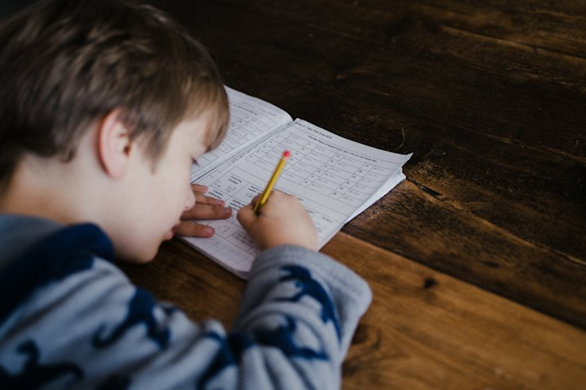
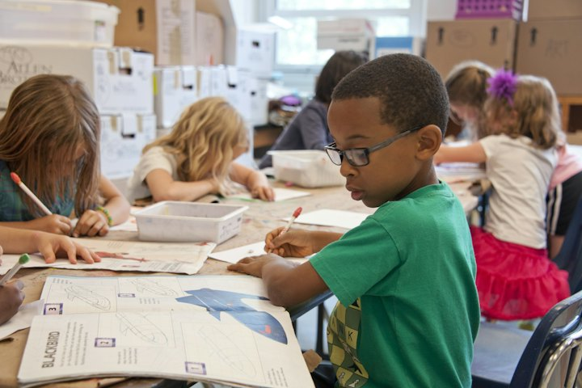
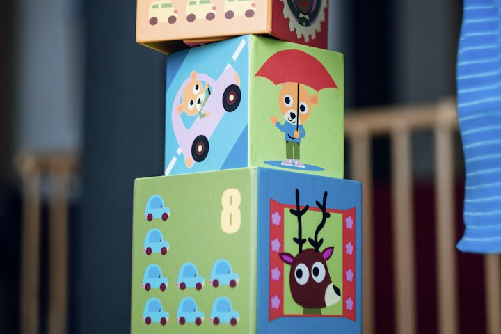
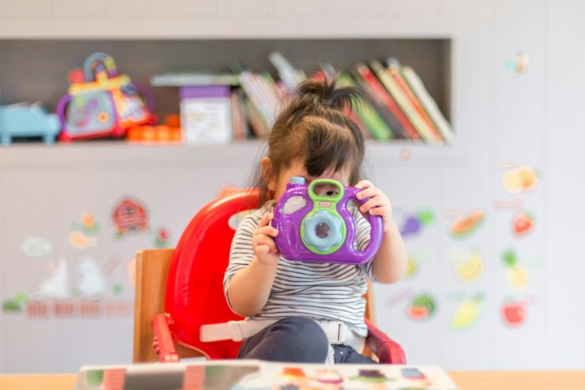

Termina a prova primeiro e esquece o casaco todo dia.
Sou o Leandro Carvalho, psicólogo em São João da Boa Vista. Atendo crianças e adolescentes com altas habilidades, TDAH e TEA, e trabalho junto com os pais e a escola para entender o que está por trás do comportamento.
Na primeira conversa eu pergunto aos pais: de 0 a 10, quanto isso pesa na rotina da família hoje?
O que os pais costumam me contar na primeira conversa

Aprende rápido, mas a escola virou um problema
Lê antes da turma, faz perguntas que os adultos não sabem responder e mesmo assim tira nota baixa ou se recusa a fazer a lição. Pode ser um perfil de altas habilidades que ainda não foi identificado.

Não para quieto e perde tudo
Começa três coisas e não termina nenhuma, esquece o material, ouve a mesma bronca todo dia. Antes de qualquer rótulo, olhamos o ambiente, a rotina e o que acontece logo antes e logo depois do comportamento.

Tem dificuldade para se comunicar ou brincar com outras crianças
Prefere brincar sozinho, sofre com mudanças na rotina ou tem interesses muito específicos. O trabalho foca em comunicação, habilidades sociais e autonomia, no ritmo dele.
Sente tudo com muita intensidade
Crises que duram muito, choro quando perde no jogo, medo enorme de errar. A gente ensina a criança a reconhecer o que sente e dá aos pais o que fazer na hora da crise.
A escola pediu para procurar um psicólogo
O bilhete na agenda ou a reunião com a coordenação. Eu converso com a escola, quando a família autoriza, para que casa, escola e consultório falem a mesma língua.
Da primeira conversa ao plano
Uso a análise do comportamento: observo o que acontece antes e depois de cada comportamento, defino objetivos claros e acompanho se estão sendo alcançados.
Conversa com os pais
Primeiro encontro só com os responsáveis. História da criança, rotina, sono, escola e o que mais preocupa hoje.
Sessões com a criança
Com jogos, blocos de montar e brincadeiras. É brincando que a criança mostra como pensa, lida com regras e reage quando perde.
Objetivos combinados
Metas concretas, como fazer a lição sem briga ou esperar a vez no jogo, que a família consegue enxergar no dia a dia.
Pais e escola
Orientação para os pais continuarem em casa e conversa com a escola quando faz sentido, sempre com autorização da família.
Seis perguntas antes de marcar
Responda sobre o seu filho e veja por onde eu começaria. No final, as respostas vão para o meu WhatsApp e já chegam escritas, assim a primeira conversa rende mais.
Isso não é um diagnóstico. Nada é enviado até você tocar no botão.
Na Clínica Calum, com a escola por perto

Clínica Calum
Atendo na Clínica Calum, uma clínica multidisciplinar em São João da Boa Vista da qual sou sócio. Ela tem foco em saúde mental e no desenvolvimento educacional, físico e cognitivo.
- Av. Dr. Durval Nicolau, 444, São João da Boa Vista
- Sala preparada para criança, com jogos e materiais de montar
- Outros profissionais do desenvolvimento no mesmo lugar
Pais e escola
O que acontece no consultório precisa chegar em casa e na sala de aula. Por isso parte do trabalho é com os adultos que convivem com a criança.
- Encontros de orientação com os pais
- Conversa com professores e coordenação, com autorização da família
- Informação sobre altas habilidades no projeto AHSD em Pauta
Planejei ganhar dele no jogo, mas perdi miseravelmente.Leandro, sobre um dia comum de atendimento, no Instagram
Leandro Carvalho
Sou psicólogo clínico e analista do comportamento, com atuação voltada para crianças e adolescentes. Meu foco são altas habilidades e superdotação, TDAH e TEA.
Sou sócio da Clínica Calum e idealizador do AHSD em Pauta, projeto que leva informação sobre altas habilidades e superdotação para famílias e escolas.
No Instagram @leandrocarvalhopsico eu mostro os jogos e recursos que uso nas sessões e falo sobre temas como depressão na infância.